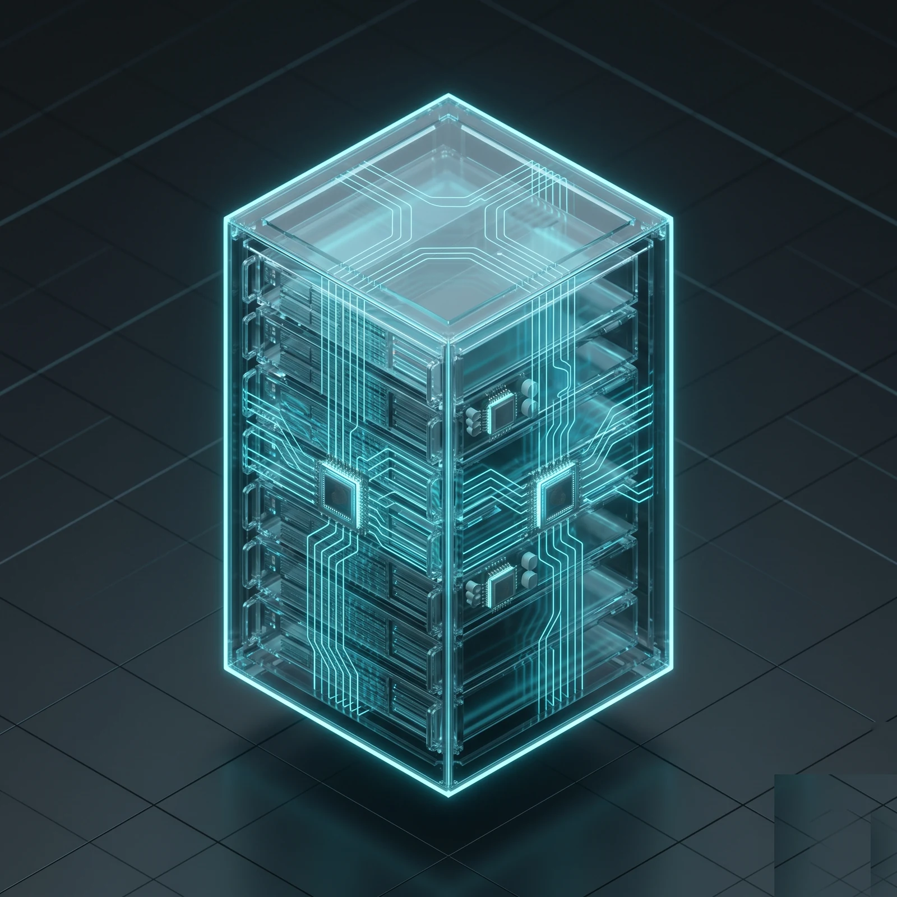
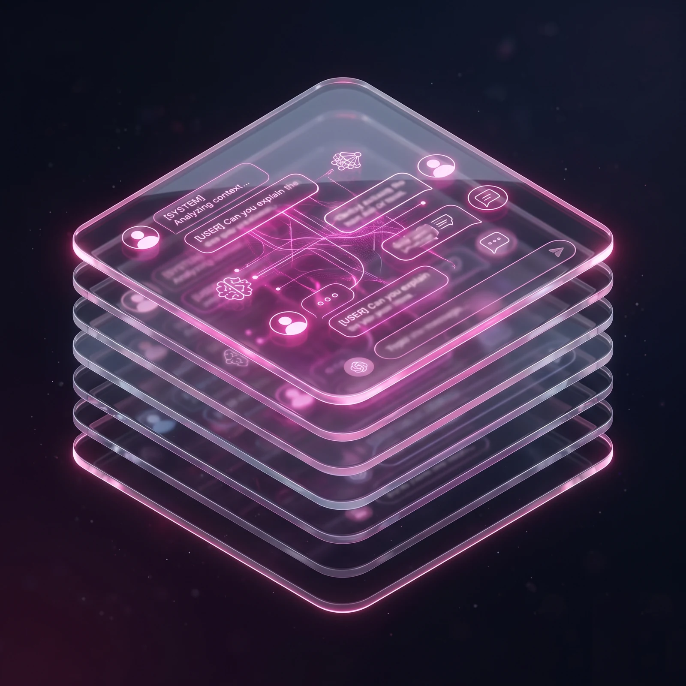

Wdrażamy sztuczną inteligencję tam, gdzie Twoi ludzie tracą najwięcej czasu — w obsłudze klienta, w analizie dokumentów, w raportach, w powtarzalnej robocie. Konkretne efekty, mierzalne w godzinach i złotówkach.
Pracujemy z narzędziami, których używają najlepsi
Możesz zacząć od jednego obszaru — albo zbudować wszystko razem. Każdy element łączy się z pozostałymi, bo projektujemy je z myślą o sobie nawzajem.

Stawiamy AI w Twojej firmie — na Twoich serwerach, w Twojej chmurze albo hybrydowo. Twoje dane nie wychodzą poza Twoją infrastrukturę. Kontrolujesz koszty od pierwszego dnia.
Łączymy AI z Twoimi dokumentami, ofertami, regulaminami, mailami i CRM. Asystent odpowiada konkretnie — o Twojej firmie, Twoich klientach, Twoich procedurach. Nie ogólnikami z internetu.

Budujemy panele, asystentów klienta i narzędzia dla zespołu — w których AI jest pomocą, nie ciekawostką. Twoi ludzie używają ich z własnej woli, nie z polecenia szefa.
Automatyzujemy długie łańcuchy powtarzalnych zadań — kategoryzację, raportowanie, draft odpowiedzi, analizę. AI bierze na siebie pracę, której nie chcą robić ludzie, a której nie warto powierzać dodatkowemu etatowi.
Każdy nasz system trafia do prawdziwych użytkowników. Testujemy, monitorujemy, poprawiamy — żeby Twoi ludzie nie dzwonili w środku nocy z błędami.
Testujemy zanim wpuścimy system na produkcję. Twój zespół rano nie zobaczy alarmów ani niespodzianek.
Wiemy, kiedy AI zaczyna gorzej odpowiadać — automatycznie. Nigdy nie dowiesz się o tym od klienta.
Proste pytania trafiają do tańszej AI, trudne do najmocniejszej. Średnio 70% niższy rachunek niż naiwne podejście.
Bez warsztatów, bez prezentacji. Działający kod od pierwszego miesiąca.
45-minutowa rozmowa o Twojej firmie i procesach. Wychodzisz z konkretnym pomysłem — nawet jeśli nie pracujemy razem.
Budujemy działającą wersję na Twoich danych. Widzisz efekt zanim zatwierdzisz pełny budżet.
System trafia do Twoich ludzi. Integrujemy z narzędziami, szkolimy zespół, mierzymy efekty.
Aktualizujemy modele, dodajemy scenariusze, reagujemy na zmiany w Twojej firmie. Zostajemy z Tobą.
Każdy zastąpił pracę, która ręcznie zajmowałaby dziesiątki godzin tygodniowo.
System, który robi setki zadań naraz — zamiast czekać aż jedno się skończy. AI pracuje równolegle, wyniki widać na żywo, błędy obsługujemy automatycznie. Pod każdy proces, który dziś zajmuje godziny.
Asystent widzi Twój plan pracy i pomaga go rozłożyć. Rozumie zależności między zadaniami, proponuje kolejność, ostrzega o ryzykach. Robi to, co zwykle robi senior project manager — w sekundzie.
Wtyczka do przeglądarki, która robi to, co Twój zespół robił ręcznie godzinami: publikuje, monitoruje, zbiera dane z 90+ grup naraz. Bez ryzyka utraty konta — wszystko z poziomu Twojej przeglądarki.
Pytania, które słyszymy na pierwszej rozmowie u 9 z 10 klientów. Odpowiadamy raz, żeby nie blokować Ci czasu.
Nie. Wiem, że pytanie jest stawiane szczerze i obawa jest zrozumiała. W praktyce zespoły, z którymi wdrażamy AI, nie redukują etatów. Przestają natomiast zatrudniać kolejne osoby, kiedy biznes rośnie. Ten sam pięcioosobowy zespół obsługuje sześciokrotnie większy ruch maili, dziesięciokrotnie więcej dokumentów, dwadzieścia razy więcej publikacji w mediach społecznościowych. AI bierze rutynę, człowiek bierze decyzje i relacje — i nikt nie odchodzi z firmy.
Pierwszy działający prototyp na Twoich danych — 4 tygodnie. Pełne wdrożenie produkcyjne z integracjami, monitoringiem i przeszkoleniem zespołu — 8 do 12 tygodni, zależnie od skali. Przez cały ten czas masz prototyp do testowania i podejmujesz decyzję o rozszerzaniu zakresu na podstawie realnych wyników, nie obietnic. Po wdrożeniu zostajemy z Tobą w okresie opieki: aktualizujemy modele, dostosowujemy do zmian w Twojej firmie, reagujemy na nowe scenariusze.
Każdy projekt wyceniamy indywidualnie po pierwszej rozmowie — bez tego wszystkie liczby byłyby zmyślone. Możemy jednak powiedzieć orientacyjnie, czego się spodziewać: prosty proces (np. kategoryzacja maili, obsługa jednej skrzynki) — od kilkunastu tysięcy złotych za wdrożenie. Większy system z integracjami i panelem — od kilkudziesięciu tysięcy. Utrzymanie miesięczne — kilkaset do kilku tysięcy zł zależnie od ruchu. Typowo zwrot z inwestycji następuje w 3 do 6 miesięcy na samym czasie pracy zespołu.
Decyzja jest Twoja. Możemy postawić wszystko on-prem (na Twoich serwerach), w Twojej chmurze (AWS, GCP, Azure) lub hybrydowo. Komunikacja z modelami AI idzie przez prywatne endpointy bez logowania treści po stronie dostawcy — Anthropic, Azure OpenAI, dedykowane lokalne LLM-y. Pełen audit log każdej decyzji AI, zgodność z RODO i AI Act, umowy o powierzeniu przetwarzania danych — w cenie wdrożenia. Dla najwrażliwszych projektów konfigurujemy lokalne modele, które nigdy nie wychodzą poza Twoją sieć.
Każda krytyczna decyzja — odpowiedź do klienta VIP, faktura powyżej ustalonej kwoty, akceptacja zwrotu — zatrzymuje się i czeka na akceptację człowieka. Te masowe (klasyfikacja, draft, kategoryzacja) AI robi sam, ale zostawia ślad: „jestem 92% pewien, oto źródło tej wiedzy". Człowiek klika „popraw" jeśli trzeba, system uczy się z każdej korekty. Po dwóch miesiącach trafność rośnie z około 85% do 96%, a krytyczne błędy są strukturalnie niemożliwe — bo każda taka decyzja przechodzi przez człowieka.
Od jednego procesu. Tego, w którym Twój zespół traci najwięcej czasu i którego nikt nie lubi. Skrzynka mailowa? Faktury? Raportowanie? Wybierasz jeden, budujemy pod ten konkret w 4 tygodnie, sprawdzasz przez miesiąc czy faktycznie działa. Jeśli tak — rozszerzamy. Jeśli nie — kończymy bez ciągnięcia długoterminowych zobowiązań. Sprawiedliwe ryzyko obie strony.
Bezpłatna 45-minutowa rozmowa. Słuchamy o Twojej firmie i pokazujemy, gdzie AI ma sens. Wychodzisz z konkretnym pomysłem — nawet jeśli nie pracujemy razem.